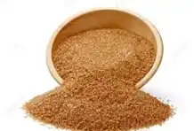

El azúcar se obtiene a partir de la caña de azúcar o de la remolacha azucarera. Durante su elaboración, el jugo se extrae, se procesa y se cristaliza hasta obtener los diferentes tipos de azúcar. El azúcar morena conserva una parte de la melaza natural, lo que le proporciona su característico color y sabor.
"El azúcar es uno de los endulzantes más utilizados en todo el mundo y se encuentra en una gran variedad de alimentos y bebidas."
Características principales:
El precio del azúcar puede variar según su tipo, presentación, calidad y marca.Presentaciones disponibles: